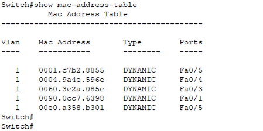
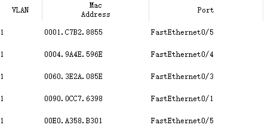
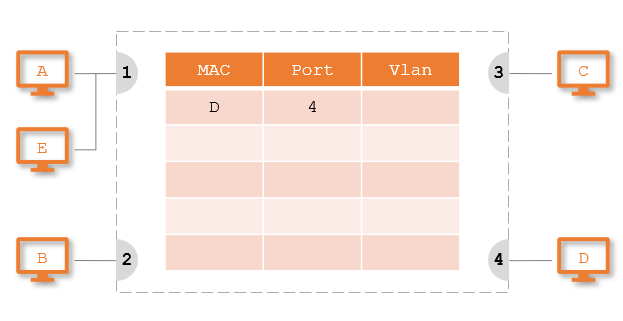
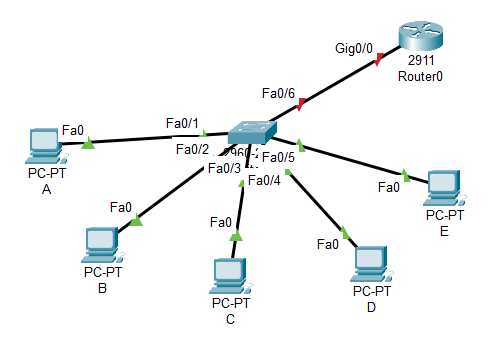
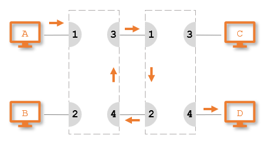
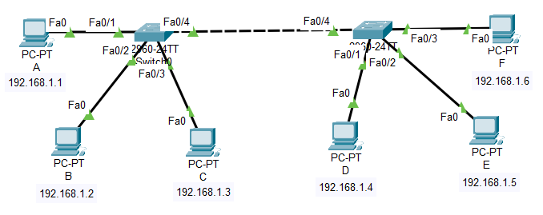

共享式交换机已淘汰
如无特别说明，交换机都是指交换式集线器 - 以太网交换机
接收/缓存完整的数据帧，校验（CRC）、过滤碎片，最后转发。转发是由专门的ASIC交换芯片实现
优点：提供差错校验和速率不一致的非对称交换
缺点：时延长
不做缓存。不做校验，收到即转发，可能有坏帧；和存储转发的特点刚好相反
融合了以上2种优势。转发前先检验数据帧的长度是否够64个字节；如果大于或等于就转发；如果不够，就作为碎片丢弃；（以太网帧 >= 64字节）
目前硬件的转发速度够快，基本可以忽略时延的影响。路由通常由软件实现
链路层交换；如无特别说明，默认都是指二层交换机
集成了路由功能；路由器默认都是三层
接入交换机一般都是固定端口的交换机
通常有24口、48口
24口：24个电（接电脑或终端或用户）的下行端口；还有4个光的上行端口
48口：48个电（接电脑或终端或用户）的下行端口；还有4个光的上行端口
楼栋/部门汇聚，一栋楼放1-2台
接用户，每个楼层放3-5台
RJ45
10/100 Mbps (Fast Ethernet)
1 Gbps (Gigabit Ethernet)
10 Gbps (10GBASE-T)
SFP (Small Form-factor Pluggable): 千兆光模块，可热插拔，支持多种传输距离和介质
SFP+ 万兆口
SFP28: 支持 25 Gbps 速率
较少应用
更常见
= ( 48*1G+4*1G )*2
= 104Gbps
包转发率 = 端口速率 / (前导码 + 帧长 + 帧间隙)
= 1000 Mbps / (64 + 7 + 1 + 12) byte
= 1000 Mbps / 84 byte
= 1000 Mbps / (84 × 8) bit
≈ 1488095 pps ≈ 1.488 Mpps
进入交换机的数据帧的源地址和进入的端口号，所在Vlan及有效时间
哪个端口 port 连着谁 MAC
谁 MAC 从哪个端口进来
MAC表条目的大小
1K、2k、4k
| MAC | Port | Timer |


如果有，则更新
如果没有，则增加
如果是，全端口转发
如果不是，则查找表中是否有与接收帧的目的MAC地址匹配的项目：
- 如果没有，则泛洪flooding到其他所有端口上
- 如果有，则比较进入的端口与登记的端口：
- - 如果不同，则按照登记的端口转发 forwarding
- - 如果相同，表明是同一侧的主机，不需要转发，丢弃 disregarding /过滤 filtering 该帧

查找交换表，存在
按登记端口转发 forwarding；这是最期望的高效转发
单播
同时登记 A → 1
| MAC | Port | Timer |
| D | 4 | |
| A | 1 |
查找交换表，没有
全端口泛洪 flooding 转发；为了确保帧能到达目标
广播
如果收到回复，则学习了对方的位置；登记 B → 2
| MAC | Port | Timer |
| D | 4 | |
| A | 1 | |
| B | 2 |
过滤 filtering
最不希望的转发
总吞吐量 = 9台主机的吞吐量 + 2台服务器的吞吐量
= 900 Mbit/s + 200 Mbit/s
= 1100 Mbit/s
如果把三台交换机换成集线器，由于集线器是总线型，同一集线器下同一时刻只能一台设备发送数据
所以图中9台主机其实只有三台在发送，吞吐量是300M，两个服务器吞吐量是200M，所以吞吐总量是500M

| 通信方向 | MAC地址表 | 转发端口 |
|---|---|---|
| A → D | A 1 | 2 3 4 5 6 |
| D → A | A 1
D 4 |
1 |
| E → A | A 1
D 4 E 5 |
1 |
| A → E | A 1
D 4 E 5 |
5 |
show mac-address-table
Switch#clear mac-address-table
选举根桥
确定根端口
选举指定端口
阻塞冗余端口这

交换机之间会自动学习 - 链路由红色转为绿色
主机之间只有通信的情况下，交换机才会学习

部门之间如何互不影响的通信？
学校规模达到一定阶段后，如何更好的组织网络？
get( MacList, f.srcMac ) ? update( MacList, f.srcMac ) : add( MacList, f.srcMac )
// 参考数据结构
Typedef struct{
int desMac;
int srcMac;
int inPort;
int outport;
} Frame